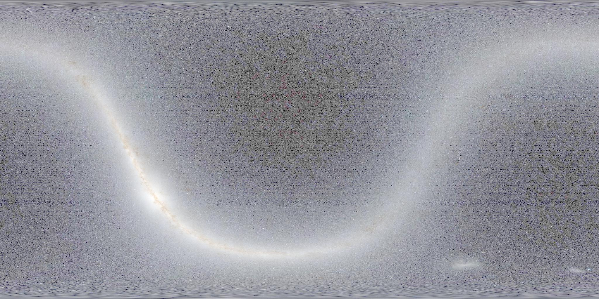
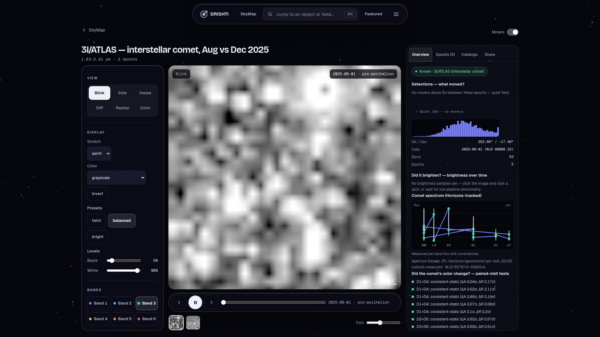
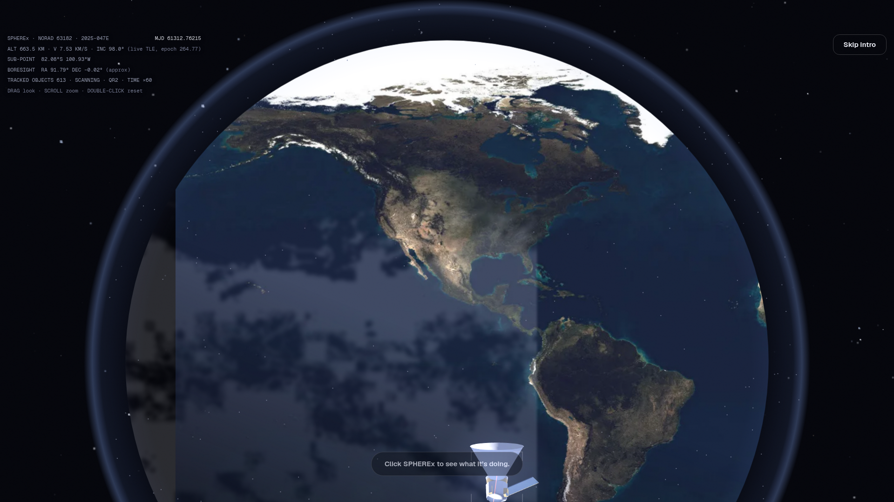

NASA/JPL-Caltech · IRSA
SPHEREx all-sky · infrared
Zeiss blink comparator, Lowell Observatory 1930 · CC BY 2.0 brewbooks · inset, not data
Team AKASHTORI
Mahdin · Aazmaine · Saikat · Orni · Himel · Zubayer
DRISHTI
linear variable filter · one detector
2.02 μm
wavelength shifts across the array
|Δλ| > bandwidth/2 → DISCARD
the rule that forgot how to see
0 kept · 0 rejected
measured on our own data · nothing deleted

cached replay — DRISHTI blink, 3I/ATLAS
cross-checked · every search
GaiaSIMBADHorizonsSkyBoT*MPC2MASS/DSSYale BSC
*SkyBoT unavailable — labeled · QR2 DOI 10.26131/IRSA652
28.9σ WITHDRAWN → CAN'T TELL
simulation — flagged pixels, not sky
DISTA · prototype
every visit is a point on the spectrum — even the mismatched ones
pairs must agree first · next experiment
offline · no login · public JSON

cached replay — DRISHTI sky
next
QR3 — trace 3I/ATLAS across every array
DRISHTI · Team AKASHTORI · Space Apps 2026
SPHEREx/IRSA QR2 DOI 10.26131/IRSA652 · QR3 DOI 10.26131/IRSA662 · Gaia DR3 · SIMBAD · Horizons · SkyBoT (unavailable, labeled) · MPC · CelesTrak · 2MASS/DSS · Yale BSC v5 · Messier/NGC (artistic) · d3-celestial
no AI sky imagery · replay labeled simulation · MIT · offline-capable